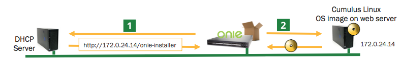
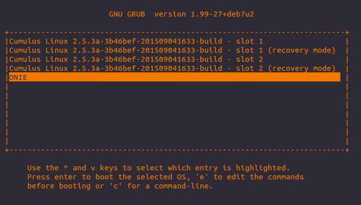
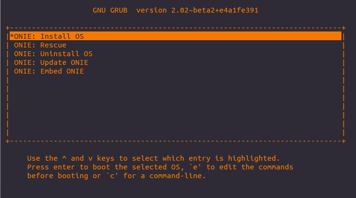

Installing a New Cumulus Linux Image
Before you install Cumulus Linux, the switch can be in two different states:
-
The switch has no image on it (so the switch is only running ONIE) or you desire or require a clean installation. In this case, you can install Cumulus Linux in one of the following ways, using:
-
The switch already has Cumulus Linux installed on it, so you only need to upgrade it
ONIE is an open source project, equivalent to PXE on servers, that enables the installation of network operating systems (NOS) on bare metal switches.
Understanding these Examples
The sections in this chapter are ordered from the most repeatable to the least repeatable methods. For instance, DHCP can scale to hundreds of switch installs with zero manual input, compared to something like USB installs. Installing via USB is fine for a single switch here and there but is not scalable.
-
You can name your Cumulus Linux installer binary using any of the ONIE naming schemes mentioned here.
-
In the examples below, [PLATFORM] can be any supported Cumulus Linux platform, such as x86_64, or arm.
Contents
Installing via a DHCP/Web Server Method with DHCP Options
Installing Cumulus Linux in this manner is as simple as setting up a DHCP/web server on your laptop and connecting the eth0 management port of the switch to your laptop.
Once you connect the cable, the installation proceeds as follows:
-
The bare metal switch boots up and asks for an address (DHCP request).
-
The DHCP server acknowledges and responds with DHCP option 114 and the location of the installation image.
-
ONIE downloads the Cumulus Linux binary, installs and reboots.
-
Success! You are now running Cumulus Linux.

The most common method is for you to send DHCP option 114 with the entire URL to the web server (this could be the same system). However, there are many other ways to use DHCP even if you don't have full control over DHCP. See the ONIE user guide for help.
Here's an example DHCP configuration with an ISC DHCP server:
subnet 172.0.24.0 netmask 255.255.255.0 { range 172.0.24.20 172.0.24.200; option default-url = "http://172.0.24.14/onie-installer-[PLATFORM]";}Here's an example DHCP configuration with dnsmasq (static address assignment):
dhcp-host=sw4,192.168.100.14,6c:64:1a:00:03:ba,set:sw4dhcp-option=tag:sw4,114,"http://roz.rtplab.test/onie-installer-[PLATFORM]"If you don't have a web server, you can use this free Apache example.
Installing via a DHCP/Web Server Method without DHCP Options
If you have a laptop on same network and the switch can pull DHCP from the corporate network, but you cannot modify DHCP options (maybe it's controlled by another team), do the following:
-
Place the Cumulus Linux binary in a directory on the web server.
-
Run the onie-nos-install command manually, since DHCP options can't be modified:
ONIE:/ #onie-nos-install http://10.0.1.251/path/to/cumulus-install-[PLATFORM].bin
Installing via a Web Server with no DHCP
Use the following method if your laptop is on the same network as the switch eth0 interface but no DHCP server is available.
One thing to note is ONIE is in discovery mode , so if you are setting a static IPv4 address for the eth0 management port, you need to disable discovery mode or else ONIE may get confused.
-
To disable discovery mode, run:
onie# onie-discovery-stopor, on older ONIE versions if that command isn't supported:
onie# /etc/init.d/discover.sh stop -
Assign a static address to eth0 via ONIE (using ip addr add):
ONIE:/ #ip addr add 10.0.1.252/24 dev eth0 -
Place the Cumulus Linux installer image in a directory on your web server.
-
Run the onie-nos-install command manually since there are no DHCP options:
ONIE:/ #onie-nos-install http://10.0.1.251/path/to/cumulus-install-[PLATFORM].bin
Installing via FTP or TFTP without a Web Server
-
Set up DHCP or static addressing for eth0, as in the examples above.
-
If you are utilizing static addressing, disable ONIE discovery mode.
-
Place the Cumulus Linux installer image into a TFTP or FTP directory.
-
If you are not utilizing DHCP options, run one of the following commands (tftp for TFTP or ftp for FTP):
ONIE# onie-nos-install ftp://local-ftp-server/cumulus-install-[PLATFORM].binONIE# onie-nos-install tftp://local-tftp-server/cumulus-install-[PLATFORM].bin
Installing via a Local File
-
Set up DHCP or static addressing for eth0, as in the examples above.
-
If you are utilizing static addressing, disable ONIE discovery mode.
-
Use scp to copy the Cumulus Linux binary to the switch.
Note: Windows users can use WinScp. -
Run the following command:
ONIE# onie-nos-install /path/to/local/file/cumulus-install-[PLATFORM].bin
Installing via USB
Following the steps below produces a clean installation of Cumulus Linux. This wipes out all pre-existing configuration files that may be present on the switch. Instructions are offered for x86 and ARM platforms, and also cover the installation of a license after the software installation.
Make sure to back up any important configuration files that you may need to restore the configuration of your switch after the installation finishes.
Preparing for USB Installation
-
Download the appropriate Cumulus Linux image for your x86 or ARM platform from the Cumulus Networks Downloads page.
-
Prepare your flash drive by formatting in one of the supported formats: FAT32, vFAT or EXT2.
It is possible that you could severely damage your system with the following utilities, so please use caution when performing the actions below!
-
Insert your flash drive into the USB port on the switch running Cumulus Linux and log in to the switch.
-
Determine and note at which device your flash drive can be found by using output from cat /proc/partitions and sudo fdisk -l [device]. For example, sudo fdisk -l /dev/sdb.
These instructions assume your USB drive is the /dev/sdb device, which is typical if the USB stick was inserted after the machine was already booted. However, if the USB stick was plugged in during the boot process, it is possible the device could be /dev/sda. Make sure to modify the commands below to use the proper device for your USB drive!
-
Create a new partition table on the device:
sudo parted /dev/sdb mklabel msdosThe parted utility should already be installed. However, if it is not, install it with: sudo apt-get install parted
-
Create a new partition on the device:
sudo parted /dev/sdb -a optimal mkpart primary 0% 100% -
Format the partition to your filesystem of choice using ONE of the examples below:
sudo mkfs.ext2 /dev/sdb1sudo mkfs.msdos -F 32 /dev/sdb1sudo mkfs.vfat /dev/sdb1To use mkfs.msdos or mkfs.vfat, you need to install the dosfstools package from the Debian software repositories (step 3 here shows you how to add repositories from Debian), as they are not included by default.
-
To continue installing Cumulus Linux, mount the USB drive in order to move files to it.
sudo mkdir /mnt/usbsudo mount /dev/sdb1 /mnt/usb
-
-
Copy the image and license files over to the flash drive and rename the image file to:
-
onie-installer-x86_64, if installing on an x86 platform
-
onie-installer-arm, if installing on an ARM platform
You can also use any of the ONIE naming schemes mentioned here.
When using a Mac or Windows computer to rename the installation file the file extension may still be present. Make sure to remove the file extension otherwise ONIE will not be able to detect the file!
-
-
Insert the USB stick into the switch, then continue with the appropriate instructions below for your x86 or ARM platform.
Instructions for x86 Platforms
-
Prepare the switch for installation:
-
If the switch is offline, connect to the console and power on the switch.
-
If the switch is already online in Cumulus Linux, connect to the console and reboot the switch into the ONIE environment with the sudo onie-select -i command, followed by sudo reboot. Then skip to step 4 below.
-
If the switch is already online in ONIE, use the reboot command.
SSH sessions to the switch get dropped after this step. To complete the remaining instructions, connect to the console of the switch. Cumulus Linux switches display their boot process to the console, so you need to monitor the console specifically to complete the next step.
-
-
Monitor the console and select the ONIE option from the first GRUB screen shown below.
 -
Cumulus Linux on x86 uses GRUB chainloading to present a second GRUB menu specific to the ONIE partition. No action is necessary in this menu to select the default option ONIE: Install OS.
 -
At this point, the USB drive should be automatically recognized and mounted. The image file should be located and automatic installation of Cumulus Linux should begin. Here is some sample output:
ONIE: OS Install Mode ...Version : quanta_common_rangeley-2014.05.05-6919d98-201410171013Build Date: 2014-10-17T10:13+0800Info: Mounting kernel filesystems... done.Info: Mounting LABEL=ONIE-BOOT on /mnt/onie-boot ...initializing eth0...scsi 6:0:0:0: Direct-Access SanDisk Cruzer Facet 1.26 PQ: 0 ANSI: 6sd 6:0:0:0: [sdb] 31266816 512-byte logical blocks: (16.0 GB/14.9 GiB)sd 6:0:0:0: [sdb] Write Protect is offsd 6:0:0:0: [sdb] Write cache: disabled, read cache: enabled, doesn't support DPO or FUAsd 6:0:0:0: [sdb] Attached SCSI disk<...snip...>ONIE: Executing installer: file://dev/sdb1/onie-installer-x86_64Verifying image checksum ... OK.Preparing image archive ... OK.Dumping image info...Control File Contents=====================Description: Cumulus LinuxOS-Release: 3.0.0-3b46bef-201509041633-buildArchitecture: amd64Date: Fri, 27 May 2016 17:10:30 -0700Installer-Version: 1.2Platforms: accton_as5712_54x accton_as6712_32x mlx_sx1400_i73612 dell_s6000_s1220 dell_s4000_c2338 dell_s3000_c2338 cel_redstone_xp cel_smallstone_xp cel_pebble quanta_panther quanta_ly8_rangeley quanta_ly6_rangeley quanta_ly9_rangeleyHomepage: http://www.cumulusnetworks.com/ -
After installation completes, the switch automatically reboots into the newly installed instance of Cumulus Linux.
-
Determine and note at which device your flash drive can be found by using output from cat /proc/partitions and sudo fdisk -l [device]. For example, sudo fdisk -l /dev/sdb.
These instructions assume your USB drive is the /dev/sdb device, which is typical if the USB stick was inserted after the machine was already booted. However, if the USB stick was plugged in during the boot process, it is possible the device could be /dev/sda. Make sure to modify the commands below to use the proper device for your USB drive!
-
Create a mount point to mount the USB drive to:
sudo mkdir /mnt/mountpoint -
Mount the USB drive to the newly created mount point:
sudo mount /dev/sdb1 /mnt/mountpoint -
Install your license file with the cl-license command:
sudo cl-license -i /mnt/mountpoint/license.txt -
Check that your license is installed with the cl-license command.
-
Reboot the switch to utilize the new license.
sudo reboot
Instructions for ARM Platforms
-
Prepare the switch for installation:
-
If the switch is offline, connect to the console and power on the switch.
-
If the switch is already online in Cumulus Linux, connect to the console and reboot the switch into the ONIE environment with the sudo onie-select -i command, followed by sudo reboot. Then skip to step 4 below.
-
If the switch is already online in ONIE, use the reboot command.
SSH sessions to the switch get dropped after this step. To complete the remaining instructions, connect to the console of the switch. Cumulus Linux switches display their boot process to the console, so you need to monitor the console specifically to complete the next step.
-
-
Interrupt the normal boot process before the countdown (shown below) completes. Press any key to stop the autobooting.
U-Boot 2013.01-00016-gddbf4a9-dirty (Feb 14 2014 - 16:30:46) Accton: 1.4.0.5CPU0: P2020, Version: 2.1, (0x80e20021)Core: E500, Version: 5.1, (0x80211051)Clock Configuration:CPU0:1200 MHz, CPU1:1200 MHz,CCB:600 MHz,DDR:400 MHz (800 MT/s data rate) (Asynchronous), LBC:37.500 MHzL1: D-cache 32 kB enabledI-cache 32 kB enabled<...snip…>USB: USB2513 hub OKHit any key to stop autoboot: 0 -
A command prompt appears, so you can run commands. Execute the following command:
run onie_bootcmd -
At this point the USB drive should be automatically recognized and mounted. The image file should be located and automatic installation of Cumulus Linux should begin. Here is some sample output:
Loading Open Network Install Environment …Platform: arm-as4610_54p-r0Version : 1.6.1.3WARNING: adjusting available memory to 30000000## Booting kernel from Legacy Image at ec040000 …Image Name: as6701_32x.1.6.1.3Image Type: ARM Linux Multi-File Image (gzip compressed)Data Size: 4456555 Bytes = 4.3 MiBLoad Address: 00000000Entry Point: 00000000Contents:Image 0: 3738543 Bytes = 3.6 MiBImage 1: 706440 Bytes = 689.9 KiBImage 2: 11555 Bytes = 11.3 KiBVerifying Checksum ... OK## Loading init Ramdisk from multi component Legacy Image at ec040000 …## Flattened Device Tree from multi component Image at EC040000Booting using the fdt at 0xec47d388Uncompressing Multi-File Image ... OKLoading Ramdisk to 2ff53000, end 2ffff788 ... OKLoading Device Tree to 03ffa000, end 03fffd22 ... OK<...snip...>ONIE: Starting ONIE Service DiscoveryONIE: Executing installer: file://dev/sdb1/onie-installer-armVerifying image checksum ... OK.Preparing image archive ... OK.Dumping image info…Control File Contents=====================Description: Cumulus LinuxOS-Release: 3.0.0-3b46bef-201509041633-buildArchitecture: armDate: Fri, 27 May 2016 17:08:35 -0700Installer-Version: 1.2Platforms: accton_as4600_54t, accton_as6701_32x, accton_5652, accton_as5610_52x, dni_6448, dni_7448, dni_c7448n, cel_kennisis, cel_redstone, cel_smallstone, cumulus_p2020, quanta_lb9, quanta_ly2, quanta_ly2r, quanta_ly6_p2020Homepage: http://www.cumulusnetworks.com/ -
After installation completes, the switch automatically reboots into the newly installed instance of Cumulus Linux.
-
Determine and note at which device your flash drive can be found by using output from cat /proc/partitions and sudo fdisk -l [device]. For example, sudo fdisk -l /dev/sdb.
These instructions assume your USB drive is the /dev/sdb device, which is typical if the USB stick was inserted after the machine was already booted. However, if the USB stick was plugged in during the boot process, it is possible the device could be /dev/sda. Make sure to modify the commands below to use the proper device for your USB drive!
-
Create a mount point to mount the USB drive to:
sudo mkdir /mnt/mountpoint -
Mount the USB drive to the newly created mount point:
sudo mount /dev/sdb1 /mnt/mountpoint -
Install your license file with the cl-license command:
sudo cl-license -i /mnt/mountpoint/license.txt -
Check that your license is installed with the cl-license command.
-
Reboot the switch to utilize the new license.
sudo reboot
Installing a New Image when Cumulus Linux Is already Installed
Follow these upgrade steps for both major and minor releases, where:
-
A major release upgrade is 2.X.X to 3.X.X (for example, 2.5.6 to 3.2.0)
-
A minor release upgrade is X.2.X to X.3.X (for example, 3.1.2 to 3.2.0)
For more information, see Upgrading Cumulus Linux.
Entering ONIE Mode from Cumulus Linux
If Cumulus Linux is already installed on the switch, you can enter ONIE mode in one of two ways, using:
-
ONIE Recovery Mode to manually install an image from the ONIE prompt:
cumulus@switch:~$ sudo onie-select -rcumulus@switch:~$ sudo reboot -
ONIE Install Mode to attempt to automatically discover the image from a DHCP server:
cumulus@switch:~$ sudo onie-select -icumulus@switch:~$ sudo reboot